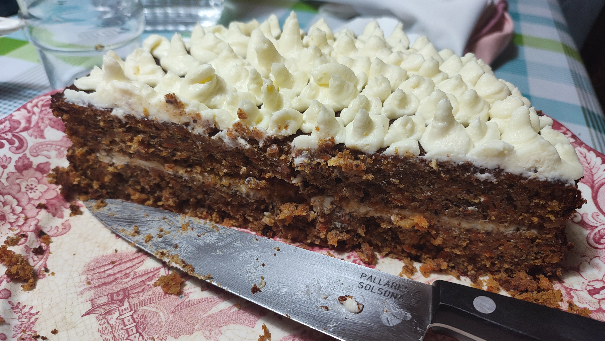
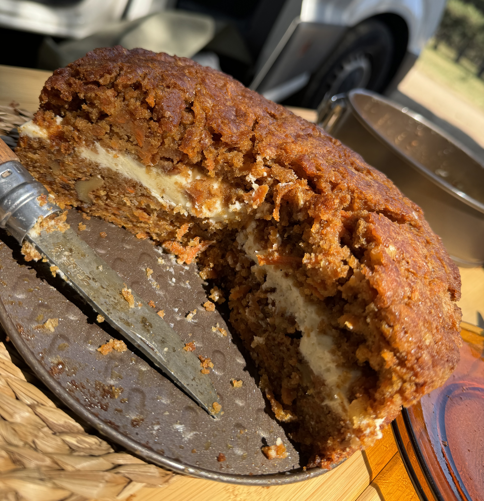

Carrot cake
Ingrédients
- 300 g de farine à levure incorporée
- 1 sachet de levure chimique
- 150 g de sucre en poudre
- 200 g de cassonade
- 3 c. à c. de cannelle
- 1 sachet de sucre vanillé
- 1 c. à s. de zestes d'orange
- 1 c. à s. de zestes de citron
- 1 c. à c. de sel fin
- 100 g de noix
- 300 ml d'huile de tournesol
- 500 g de carottes
- 4 oeufs
- 1 c. à c. d'extrait de vanille
- 200 g de sucre glace
- 2 blancs d'oeuf

De Guillaume S.
Préparation
Étape 1
Préchauffer le four à 180ºC (th. 6).
Étape 2
Mélanger 300 g de farine à levure incorporée, 1 sachet de levure chimique, 150 g de sucre en poudre, 200 g de cassonade, 3 c. à c. de cannelle, 1 sachet de sucre vanillé, 1 c. à s. de zestes d'orange, 1 c. à s. de zestes de citron, 1 c. à c. de sel fin et 100 g de noix en morceaux.
Étape 3
Ajouter 300 ml d'huile de tournesol.
Étape 4
Râper 500 g de carottes (4 ou 5 grosses) et les incorporer.
Étape 5
Ajouter 4 oeufs un par un.
Étape 6
Ajouter 1 c. à c. d'extrait de vanille.
Étape 7
Bien mélanger et verser dans un grand moule.
Étape 8
Enfourner pendant 1h (le gâteau doit être bien gonflé et ferme).
Étape 9
Attendre 30min avant de démouler.
Étape 10
Pour le glaçage, voir recette du frosting ou sinon mélanger 200 g de sucre glace et 2 blancs d'oeuf.
Résumé
